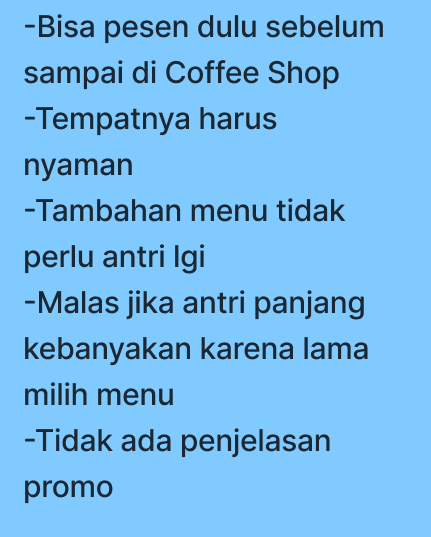
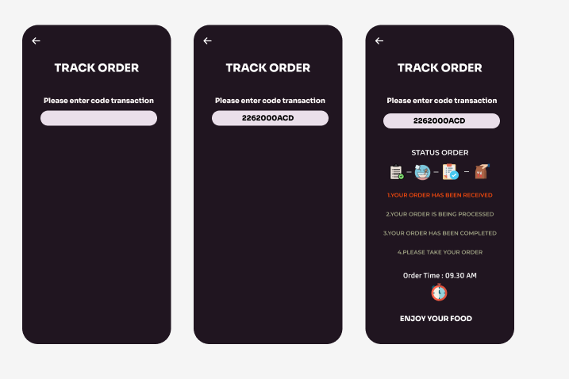
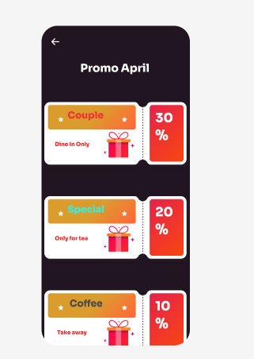
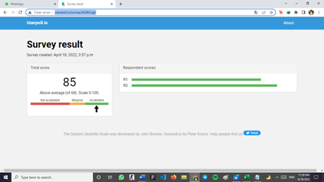

The Design Thinking process starts with empathy. In order to create desirable products and services, you need to understand who your users are and what they need.
Design Thinking
In the second stage of the Design Thinking process, you’ll define the user problem that you want to solve. First, you’ll gather all of your findings from the empathize phase and start piecing them together.
The third stage in the Design Thinking process consists of ideation—or generating ideas. By this point, you know who your target users are and what they want from your product. You also have a clear problem statement that you’re hoping to solve. Now it’s time to come up with possible solutions.



In the fourth stage of the Design Thinking process, you’ll turn your ideas from stage three into prototypes. A prototype is essentially a scaled-down version of a product or feature—be it a simple paper model or a more interactive digital representation..
The fifth step in the Design Thinking process is dedicated to testing: putting your prototypes in front of real users and seeing how they get on. During the testing phase, you’ll observe your target users—or representative users—as they interact with your prototype. You’ll also gather feedback on how your users felt throughout the process.
